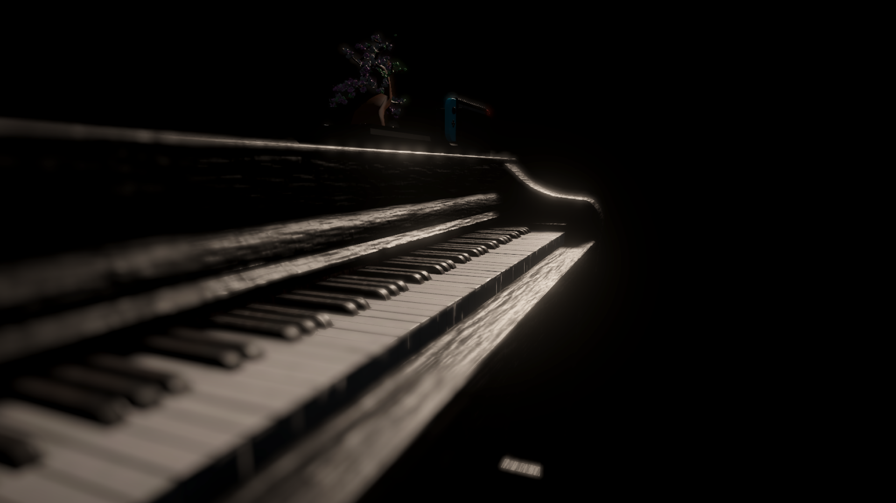
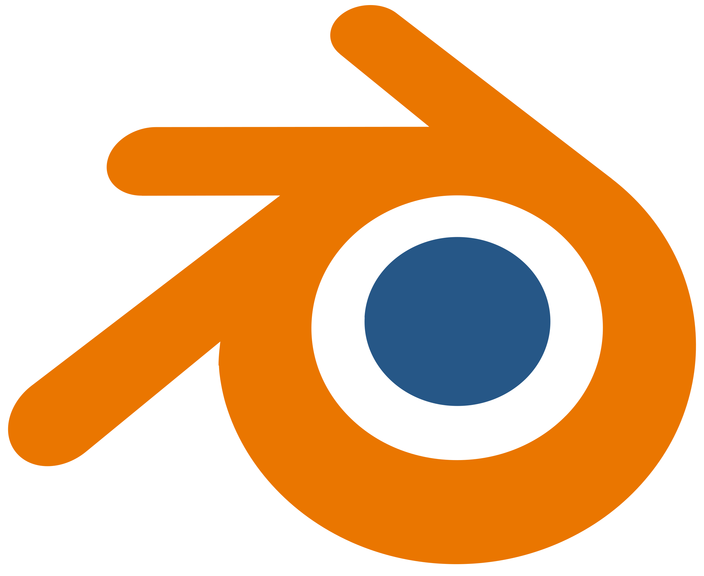
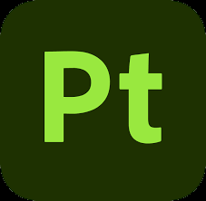
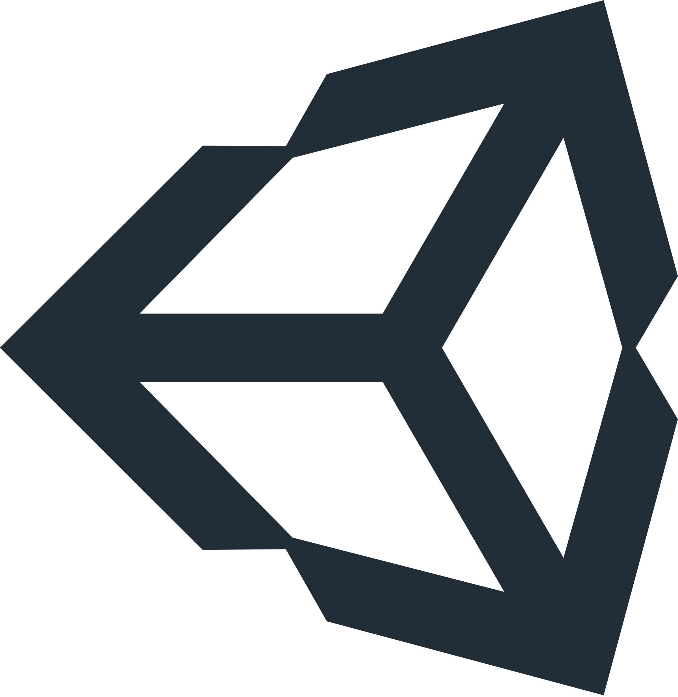
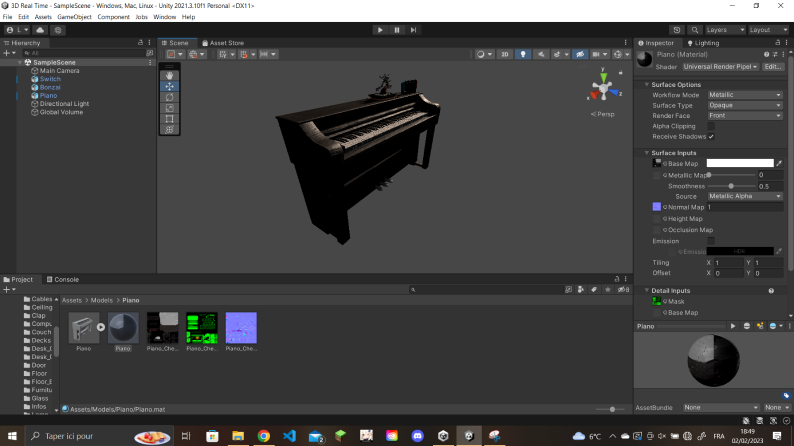

 3D en temps réel
J'ai fait un double diplôme avec l'ENSAM (Ecole National Supérieure des Arts & Métiers), où j'ai pu apprendre le management des technologies immersives. À partir d'un sketch jusqu'à la modélisation, l'UV Mapping, le rigging, le texturing, l'importation sur Unity et le développement, j'ai appris à créer un environnement 3D en temps réel. J'utilise aussi la VR, l'AR et la réalité mixte.

Modélisation
À partir d'un sketch 2D, la modélisation est le moyen de le représenter dans un espace 3D. Il existe plusieurs logiciels pour façonner de la 3D. Ce piano a été modelé sur Blender.
J'ai appris à utiliser Blender en autodidacte jusqu'au double diplôme où j'ai pu approfondir mes connaissances.
UV_Mapping
L'UV Mapping est une étape essentielle pour la création de texture d'objet 3D. Après avoir modélisé le piano, je l'ai "unwrap" sur blender.
L'objectif est de découper l'objet pour "l'aplatir" en 2D car les textures sont des images.

Texturing
Après avoir fait l'UV Mapping du piano, on peut le texturer. Pour cela on peut créer les textures nous même, sur photoshop par exemple en créant une color base map, une normal map, etc ou alors on peut en générer.
Pour le piano j'ai utilisé Substance Painter de la suite Adobe. Il me permet de bake des maps (normal map, roughness, occlusion, etc). Par exemple, il peut générer des maps d'occlusion par rapport à l'objet et générer automatiquement des zones poussiéreuses, sales, etc.

Importation
Enfin je peux exporter le modèle 3D et les textures pour les importer dans Unity (Voici un projet URP) pour les utiliser dans diverses expériences (Comme la VR, l'AR, etc). Une fois dans Unity, je peux coder des scripts pour interagir avec l'objet.

Merci d'être arrivé jusqu'ici !